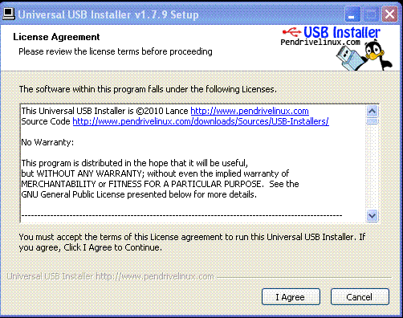
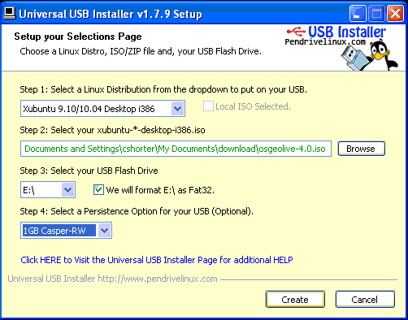
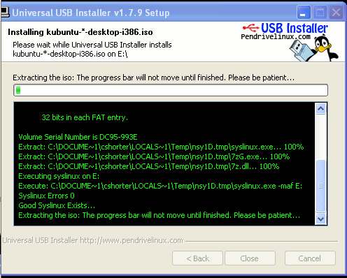

Com crear un disc USB d’arrencada per OSGeo-Live¶
Aquí es descriu com crear un disc USB d’arrencada per OSGeo-Live. Arrancar des d’un disc USB és molt més ràpid que fer-ho des d’un DVD, i el disc USB es pot configurar per a desar dades entre sessions de treball.
Hem descobert que hi ha unes quantes peculiaritats i trucs a l’hora de crear amb éxit un disc USB d’arrencada. Hem documentat les que coneixem, però és possible ue hi hagi altres trucs i problemes. Podeu trobar els consells més nous aquí: http://wiki.osgeo.org/wiki/Live_GIS_Disc_Quick_Start_for_USB
Requeriments¶
- Un disc USB de 4 GB, si penseu emprar osgeo-live-mini (sense instal·ladors per Windows ni Mac)
- Un disc USB de 8 GB USB, si penseu emprar osgeo-live (amb instal·ladors per Windows i per Mac)
- Un DVD d’OSGeo-Live DVD o bé una imatge ISO (que podeu descarregar de: http://live.osgeo.org/en/download.html)
Crear un disc USB d’arrencada a Ubuntu¶
(Aquest és el procediment recomanat per crear l’USB, i també s’aplica a les variants d’Ubuntu, com Lubuntu o OSGeo-Live.)
Note
La versió d’Ubuntu que executeu ha de ser la mateixa o bé més nova que la versió de Lubuntu que instal·lareu al vostre USB. Si voleu instal·lar OSGeo-Live 5.0/5.5 en un USB, llavors heu d’estar executamt Ubuntu 11.04 o més recent.
Descarregueu osgeo-live o osgeo-live-mini al disc dur del vostre ordinador.
Connecteu el disc USB al vostre ordinador.
Escolliu , o cerqueu Startup Disk Creator des de l’escriptori Unity.

Escolliu la imatge ISO d’osgeo-live o bé d’osgeo-live-mini.
Escolliu el disc USB.
Escolliu Make Startup Disk

Espereu uns 20 minuts més o menys fins que s’hagi creat el disc USB.
Crear un disc USB d’arrencada a Windows¶
Connecteu el disc USB al vostre ordinador.
Descarregueu i executeu l’Instal·lador Universal d’USB des de: http://www.pendrivelinux.com/universal-usb-installer-easy-as-1-2-3/

Accepteu les condicions de la llicència

Pas 1: Distribució: Seleccioneu la distribució xubuntu i386 per a la imatge osgeo-live. (Per OSGeo-Live 5.5, seleccioneu xubuntu 11.04 Desktop i386)
Pas 2: Seleccioneu la darrera imatge ISO d’osgeo-live que us heu descarregat localment. Nota: Heu de posar a mà la ruta fins l’arxiu ISO, ja que el botó Browse només troba arxius ISO per xubuntu.
Pas 3: Escolliu el disc USB.
Pas 4: Escolliu Persistence si voleu que es recordi l’estat entre sessions.
Escolliu Create

Espereu uns 20 minuts més o menys fins que s’hagi creat el disc USB d’OSGeo-Live.
Crear un disc USB d’arrencada en d’altres sistemes operatius¶
Pas 1: Instaleu UNetbootin (el podeu descarregar de: http://unetbootin.sourceforge.net/).
Pas 2: Connecteu el disc USB al vostre ordinador.
Pas 3: Engegeu UNetbootin, escolliu Diskimage (el disc USB es selecciona automàticament).
Pas 4: Seleccioneu la imatge ISO d’OSGeo-Live.
Escolliu OK

{kind=link}
Definiu l’ordre d’arrencada a la BIOS:¶
La majoria d’ordinadors no tenen definit per defecte arrencar des d’un disc USB.
Per aconseguir-ho, engegeu el vostre ordinador i premeu la tecla apropiada quan us demani d’entrar a la BIOS (usualment és la tecla <Delete> o bé alguna <Function Key> o similar).
Escolliu d’arrencar des d’un disc USB.
Nota, en alguns ordinadors cal que tingueu el disc USB connectat a l’ordinador per tal d’escoliir aquest opció.
Nota segona, el disc USB bastant sovint apareix amb els disc durs i no pas amb els discs desmuntables.
Executeu:¶
Executeu segons: Guia d’inici ràpid d’OSGeo-Live
Problemes coneguts:¶
- Els ordinadors MAC no arrencaran des d’aquest disc USB, heu de fer servir el LiveDVD
Vegeu també:¶
- Guia d’inici ràpid d’OSGeo-Live
- OSGeo-Live Quickstart for Virtual Box
- Instal·lar OSGeo-Live al disc dur
- Si teniu problemes, si us plau informeu-ne en aquesta pàgina wiki: http://wiki.osgeo.org/wiki/Live_GIS_Disc_Quick_Start_for_USB i parleu-ne a la llista de correu: http://lists.osgeo.org/mailman/listinfo/live-demo
- Per altres opcions d’arrencada USB, mireu-vos http://pendrivelinux.com